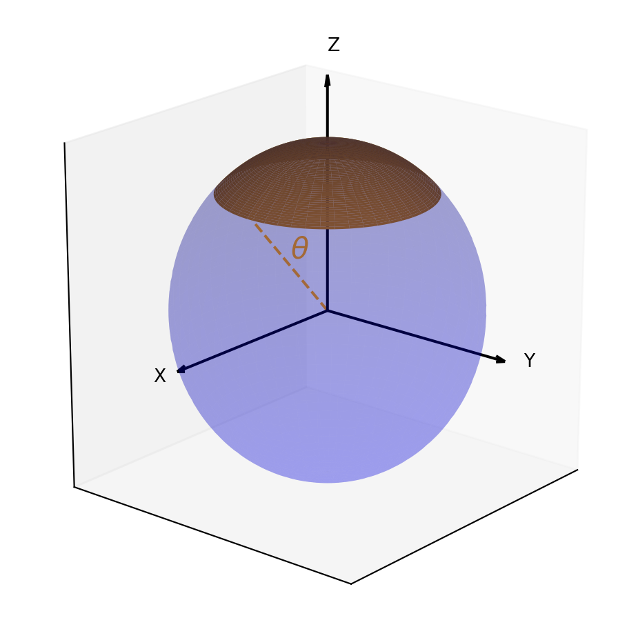

Code
import numpy as np
import matplotlib.pyplot as plt
from mpl_toolkits.mplot3d import Axes3D
def plot_sphere_with_uniform_color(radius=1, z_max=np.sqrt(2)/2):
"""
Plots a sphere with a uniformly colored spherical cap using Matplotlib.
Displays the Cartesian coordinate axes and the opening angle theta.
Parameters:
radius (float): Radius of the sphere.
z_max (float): Maximum z-coordinate for the cap, scaled between 0 and 1.
Returns:
Matplotlib figure
"""
# Define the azimuthal angle phi and theta
phi = np.linspace(0, 2 * np.pi, 100)
theta = np.linspace(0, np.pi, 100)
phi, theta = np.meshgrid(phi, theta)
# Parametric equations for the sphere
x = radius * np.sin(theta) * np.cos(phi)
y = radius * np.sin(theta) * np.sin(phi)
z = radius * np.cos(theta)
# Create a 3D plot
fig = plt.figure(figsize=(8, 6))
ax = fig.add_subplot(111, projection='3d')
# Plot the sphere
ax.plot_surface(x, y, z, color='blue', alpha=0.2)
# Calculate the angle for the cap based on z_max
theta_max = np.arccos(z_max)
cap_theta = np.linspace(0, theta_max, 50)
cap_phi, cap_theta = np.meshgrid(phi[0], cap_theta)
# Parametric equations for the cap
cap_x = radius * np.sin(cap_theta) * np.cos(cap_phi)
cap_y = radius * np.sin(cap_theta) * np.sin(cap_phi)
cap_z = radius * np.cos(cap_theta)
ax.plot_surface(cap_x, cap_y, cap_z, color='orange', alpha=1.0)
# Add Cartesian coordinate axes with labels
axis_length = radius * 1.4
ax.quiver(0, 0, 0, axis_length, 0, 0, color='black', arrow_length_ratio=0.05)
ax.quiver(0, 0, 0, 0, axis_length, 0, color='black', arrow_length_ratio=0.05)
ax.quiver(0, 0, 0, 0, 0, axis_length, color='black', arrow_length_ratio=0.05)
ax.text(axis_length*1.15, 0, 0, "X", color='black')
ax.text(0, axis_length*1.1, 0, "Y", color='black')
ax.text(0, 0, axis_length*1.1, "Z", color='black')
# Display the opening angle theta
edge_x = radius * np.sin(theta_max)
edge_z = radius * np.cos(theta_max)
ax.plot([0, edge_x], [0, 0], [0, edge_z], color='orange', linestyle='dashed')
ax.text(edge_x / 2, 0, edge_z / 2+0.05, r'$\theta$', fontsize=16, color='orange')
# Setting the aspect ratio
ax.set_box_aspect([1,1,1]) # Aspect ratio is 1:1:1
ax.view_init(elev=20, azim=40)
ax.set_xticks([])
ax.set_yticks([])
ax.set_zticks([])
return fig
# Plot the sphere with the cap
fig = plot_sphere_with_uniform_color()
plt.show()